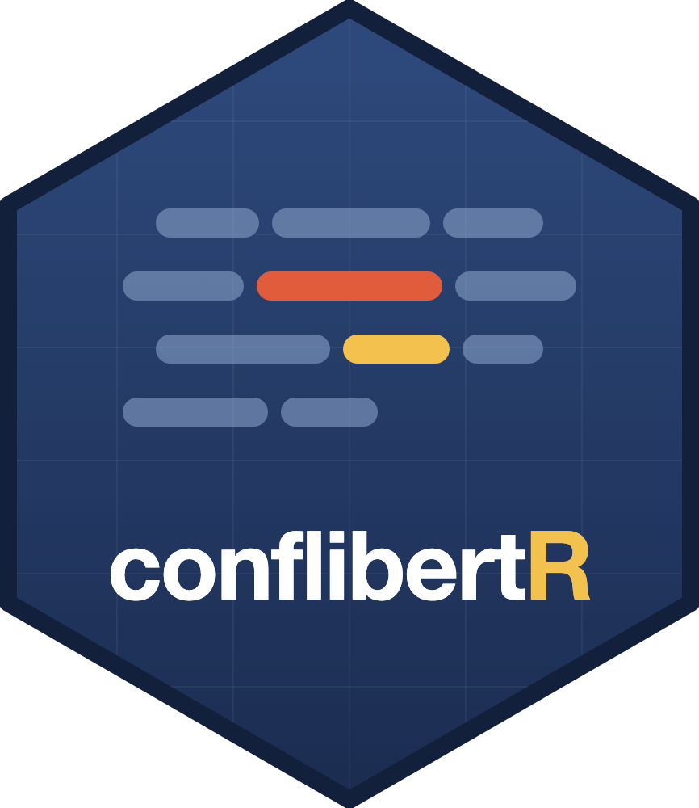

conflibertR
Political conflict text analysis in R, powered by ConfliBERT.



ConfliBERT is an NSF-funded language model pretrained on a large corpus of politics, conflict, and violence text, and it consistently beats general-purpose LLMs on conflict-event tasks while running hundreds of times faster (Hu et al. 2022; Brandt et al. 2025). conflibertR wraps the full ConfliBERT workflow in idiomatic R: every function takes and returns plain data frames, so results drop straight into a dplyr or ggplot2 pipeline, with no Python visible at any point.
What it does
Inference out of the box
Named entity recognition, binary and multilabel event classification, and question answering with the published ConfliBERT checkpoints. Vectorized, deterministic, and tibble-in, tibble-out.
Fine-tuning
Train a classifier on your own labeled data with conflibert_finetune(), choosing among 7 base models. LoRA support cuts GPU memory roughly 5x, and seeded training makes runs exactly reproducible.
Model comparison
conflibert_compare() fine-tunes several base models on the same split and reports test metrics side by side, so the “which encoder should I use?” question is one function call.
Active learning
Label only the documents the model is least certain about. conflibert_active_start() manages the loop, with a point-and-click Shiny gadget for labeling and diversity-aware batch selection.
Installation
install.packages("conflibertR")
library(conflibertR)
conflibert_install() # one-time Python backend setup, then restart RThe package is a reticulate wrapper: conflibert_install() provisions a conda or virtualenv environment with PyTorch and transformers once, and everything after that is plain R.
A quick look
conflibert_ner("NATO forces were deployed near Kabul in September.")
#> ── ConfliBERT entities ────────── 3 entities in 1 text ──
#> 1. NATO forces were deployed near Kabul in September.
#> Organisation NATO 0.99
#> Location Kabul 0.99
#> Temporal September 0.98
conflibert_classify("A bomb exploded in the crowded market.")
#> # A tibble: 1 × 6
#> text label class confidence ...
#> 1 A bomb exploded in the… Positive 1 0.98data <- conflibert_example("binary")
fit <- conflibert_finetune(
data$train, data$dev, data$test,
model = "ConfliBERT", epochs = 3, seed = 42
)
fit$metrics # accuracy, precision, recall, F1
plot(fit) # test-set confusion matrixdata <- conflibert_example("active")
s <- conflibert_active_start(
seed = data$seed, pool = data$pool,
dev = data$dev, query_size = 10
)
labels <- conflibert_active_label(s) # Shiny labeling gadget
s <- conflibert_active_next(s, labels)
plot(s) # learning curve by roundCheatsheet
The whole package on one page: setup, the four inference functions, fine-tuning and LoRA, model comparison, and the active-learning loop.
Citing
If you use conflibertR in published work, please cite the ConfliBERT model paper; citation("conflibertR") has the full details.
@inproceedings{hu2022conflibert,
title = {{ConfliBERT}: A Pre-trained Language Model for
Political Conflict and Violence},
author = {Hu, Yibo and Hosseini, MohammadSaleh and
Skorupa Parolin, Erick and Osorio, Javier and
Khan, Latifur and Brandt, Patrick and D'Orazio, Vito},
booktitle = {Proceedings of NAACL-HLT 2022},
pages = {5469--5482},
year = {2022},
doi = {10.18653/v1/2022.naacl-main.400}
}